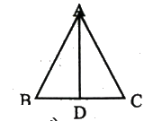
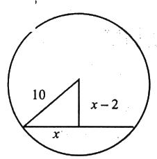

প্রাথমিক ও গণশিক্ষা মন্ত্রণালয় — সহকারী উপজেলা/থানা শিক্ষা অফিসার (ATEO) (২০১১)
(Ministry of Primary and Mass Education - Assistant Thana/Upazila Education Officer ২০১১)
জ্যামিতি (সমদ্বিবাহু ত্রিভুজ ও বৃত্তের জ্যা উপপাদ্য চিত্রসহ), উৎপাদক বিশ্লেষণ, ভগ্নাংশের সমীকরণ, মান নির্ণয়, নল ও চৌবাচ্চা, সময় ও কাজ
৩৫
সাধারণ জ্ঞান ও বিজ্ঞান
১৯ হতে ৪০ (২২টি প্রশ্ন)
মানবদেহের ক্ষুদ্রতম অস্থি, ৭ বীরশ্রেষ্ঠ, মুজিব-ইন্দিরা সীমান্ত চুক্তি, ৪ বাঙালি নোবেল বিজয়ী, আইএমএলআই, সংসদ ভবনের স্থপতি, ভ্যাট, আইপ্যাড, বিশ্বব্যাংক, অ্যামনেস্টি, কোরিয়া বিভাজন, সার্ক, এনজিওপ্লাস্টি, ইত্যাদি
৩০
সর্বমোট:
২০০
Part 1
প্রামাণ্য ইন্টারেক্টিভ রিভিশন নোট ও সূত্রাবলি (Authentic Sketchnotes)
📌 ১. বাংলা সাহিত্য ও ব্যাকরণ পঞ্চরত্ন
বাংলা সাহিত্যের যুগস্রষ্টাগণের অবদান:
ব্যক্তিত্ব / গ্রন্থ
সাল / প্রেক্ষাপট
ঐতিহাসিক গুরুত্ব
ঈশ্বরচন্দ্র বিদ্যাসাগর
১৮২০–১৮৯১ (বিদ্যাসাগর উপাধি ১৮৩৯)
বাংলা গদ্যের প্রথম শিল্পী ও যতিচিহ্নের প্রথম সার্থক প্রয়োগকারী (১৮৪৭ সালে বেতাল পঞ্চবিংশতি)।
ফোর্ট উইলিয়াম কলেজ
প্রতিষ্ঠা: ৪ মে ১৮০০ (বাংলা বিভাগ ১৮০১)
উইলিয়াম কেরির নেতৃত্বে আধুনিক বাংলা গদ্য সাহিত্যের সূতিকাগার।
মেঘনাদবধ কাব্য
১৮৬১ (৯টি সর্গ)
মাইকেল মধুসূদন দত্তের রচিত বাংলা সাহিত্যের প্রথম সার্থক মহাকাব্য (অমিত্রাক্ষর ছন্দ)।
ক্রীতদাসের হাসি
১৯৬২ (আদমজী পুরস্কার)
শওকত ওসমান রচিত আইয়ুব খানের সামরিক স্বৈরশাসনের বিরুদ্ধে রূপক প্রতিবাদ।
কবর (নাটক)
১৯৫৩ (জেলে রচিত)
মুনীর চৌধুরী রচিত ভাষা আন্দোলনের পটভূমিতে প্রথম প্রতিবাদী নাটক।
📌 ২. English Subject-Verb Agreement & Preposition Matrix
as well as / along with: \(S_1 \text{ as well as } S_2\) থাকলে Verb সর্বদা \(S_1\) অনুযায়ী নির্ধারিত হয় (e.g., Rafit as well as his parents has gone).
One of + Plural Noun: এরপরে Verb সর্বদা Singular হয় (e.g., One of the pens does not write well).
Every / Each: 'Every boy and every girl' যুক্ত থাকলে Verb সর্বদা Singular হয় (e.g., ...has been given).
Part with vs Part from: কোনো বস্তু হাতছাড়া করতে part with; কোনো ব্যক্তি থেকে বিদায় নিতে part from.
Beneficial to, Deficient in, Lament for, Prefer to: পিএসসি ও আইবিএ পরীক্ষায় সর্বাধিক আসা ফিক্সড প্রিপজিশন।
📌 ৩. গণিত ও জ্যামিতি সূত্রাবলি এবং প্রমাণ ট্রিকস
বৃত্তের কেন্দ্র ও জ্যা সংক্রান্ত সূত্র:
বৃত্তের কেন্দ্র থেকে জ্যা-এর ওপর অঙ্কিত লম্ব জ্যা-কে সমদ্বিখণ্ডিত করে।
সমকোণী ত্রিভুজে: \(( ext{লম্ব})^2 + ( ext{অর্ধ জ্যা})^2 = ( ext{ব্যাসার্ধ})^2\)
\((x-2)^2 + x^2 = 10^2 \implies x = 8 \implies ext{জ্যা} = 16 ext{ সে.মি.}\)।
নল ও চৌবাচ্চা শর্টকাট:
একটি দ্বারা পূর্ণ (\(a\) ঘণ্টায়) ও অন্যটি দ্বারা খালি (\(b\) ঘণ্টায়) হলে:
$$ ext{মোট সময়} = \frac{ab}{b - a} = \frac{20 imes 30}{30 - 20} = \frac{600}{10} = 60 ext{ ঘণ্টা}$$
📌 ৪. সংবিধান, ইতিহাস, বিজ্ঞান ও আন্তর্জাতিক জ্ঞানপঞ্জি
বিষয় / সংস্থা
গুরুত্বপূর্ণ প্রামাণ্য তথ্য
৪ বাঙালি নোবেল বিজয়ী
১. রবীন্দ্রনাথ ঠাকুর (সাহিত্য ১৯১৩), ২. অমর্ত্য সেন (অর্থনীতি ১৯৯৮), ৩. ড. মুহাম্মদ ইউনূস (শান্তি ২০০৬), ৪. অভিজিৎ ব্যানার্জি (অর্থনীতি ২০১৯)।
মুজিব-ইন্দিরা সীমান্ত চুক্তি
১৬ মে ১৯৭৪ সালে নয়াদিল্লিতে স্বাক্ষরিত হয়; ৬ জুন ২০১৫ সালে অনুসমর্থিত হয়ে কার্যকর হয়।
জাতীয় সংসদ ও লুই আই কান
সংসদ ভবনের স্থপতি লুই আই কান; উদ্বোধন হয় ২৮ জানুয়ারি ১৯৮২ সালে।
ভ্যাট (মূসক) ও আইপ্যাড
বাংলাদেশে ভ্যাট চালু হয় ১ জুলাই ১৯৯১ সালে। প্রথম আইপ্যাড উদ্ভাবন করে অ্যাপল (২০১০)।
বিগত বছরের লিখিত প্রশ্নব্যাংক ও ইন্টারেক্টিভ কুইজ ইঞ্জিন
⏳ সময় বাকি: ১৮০:০০
মূল্যায়ন অগ্রগতি: ০ / ৪০
প্রশ্ন 1বাংলাপ্রবন্ধ রচনাপূর্ণমান: 25
যেকোনো একটি বিষয়ে প্রবন্ধ রচনা করুন:
(a) বিশ্ব শ্রমবাজার ও বাংলাদেশ
(b) বাংলাদেশের আদিবাসী সম্প্রদায়
(c) একুশের বইমেলা
(d) বিচার বিভাগের স্বাধীনতা
স্ব-মূল্যায়ন:
বিচার বিভাগের স্বাধীনতা
ভূমিকা: নির্ভীক, নিরপেক্ষ ও স্বাধীন বিচারব্যবস্থা ছাড়া কোনো সভ্য, গণতান্ত্রিক ও আইনের শাসনভিত্তিক রাষ্ট্র কল্পনা করা যায় না। গণতান্ত্রিক রাষ্ট্রব্যবস্থায় বিচার বিভাগ জনগণের অধিকার ও স্বাধীনতার রক্ষাকবচ হিসেবে কাজ করে। সরকারের তিনটি প্রধান অঙ্গ—আইন বিভাগ, শাসন বিভাগ ও বিচার বিভাগ। এই তিনটি বিভাগের মধ্যে বিচার বিভাগকে অন্য দুটি বিভাগের প্রভাব ও নিয়ন্ত্রণ থেকে মুক্ত রেখে স্বাধীনভাবে দায়িত্ব পালনের সুযোগ দেওয়াই হলো বিচার বিভাগের স্বাধীনতা। ন্যায়বিচার প্রতিষ্ঠা, নাগরিক স্বাধীনতা রক্ষা এবং রাষ্ট্রীয় ক্ষমতার অপব্যবহার প্রতিরোধে বিচার বিভাগের স্বাধীনতা অপরিহার্য।
বিচার বিভাগের স্বাধীনতার ধারণা: বিচার বিভাগের স্বাধীনতা বলতে এমন একটি অবস্থাকে বোঝায়, যেখানে বিচারপতিগণ আইন বিভাগ, শাসন বিভাগ, রাজনৈতিক দল, সামাজিক চাপ বা অন্য কোনো প্রভাব ছাড়াই স্বাধীনভাবে বিচারকার্য পরিচালনা করতে পারেন। বিচারকগণ কেবল সংবিধান, প্রচলিত আইন, ন্যায়বোধ ও বিচারিক প্রজ্ঞার ভিত্তিতে সিদ্ধান্ত গ্রহণ করবেন—এটাই বিচার বিভাগের স্বাধীনতার মূল উদ্দেশ্য। বিচার বিভাগের স্বাধীনতা শুধু বাহ্যিক নিয়ন্ত্রণমুক্ত থাকাকে বোঝায় না; এর সঙ্গে বিচারকদের সততা, যোগ্যতা, নৈতিকতা ও স্বাধীনভাবে সিদ্ধান্ত গ্রহণের ক্ষমতাও জড়িত।
বিচার বিভাগের গুরুত্ব:
ন্যায়বিচার প্রতিষ্ঠা: আইনের শাসন ও ন্যায়বিচার প্রতিষ্ঠা বিচার বিভাগের প্রধান কাজ। স্বাধীন বিচার বিভাগ না থাকলে বিচারকগণ নির্ভয়ে রায় দিতে পারেন না।
নাগরিক স্বাধীনতা রক্ষা: সংবিধান প্রদত্ত মৌলিক অধিকার ক্ষুণ্ন হলে নাগরিক স্বাধীন বিচার বিভাগের শরণাপন্ন হয়ে প্রতিকার পায়।
আইনের শাসন প্রতিষ্ঠা: আইনের চোখে সবাই সমান—এই নীতি কার্যকর করতে স্বাধীন বিচার বিভাগ আবশ্যক।
ক্ষমতার অপব্যবহার রোধ: শাসন বিভাগ বা আইন বিভাগ যাতে স্বেচ্ছাচারী হতে না পারে, বিচার বিভাগ তা তদারকি ও নিয়ন্ত্রণ করে।
গণতন্ত্রের সুরক্ষা: সংখ্যাগরিষ্ঠের স্বৈরাচার থেকে সংখ্যালঘুদের অধিকার রক্ষা করে গণতন্ত্রকে সুরক্ষিত রাখে।
বিচার বিভাগের স্বাধীনতার রক্ষাকবচ:
বিচার বিভাগ ও শাসন বিভাগের পৃথকীকরণ: বিচার বিভাগকে শাসন বিভাগের নিয়ন্ত্রণ থেকে সম্পূর্ণ মুক্ত রাখা। প্রাচীনকালে শাসকই আইন প্রণয়ন ও বিচার করতেন। আধুনিক রাষ্ট্রে মন্টেস্কুর ক্ষমতা পৃথকীকরণ নীতির মাধ্যমে বিচার বিভাগকে শাসন বিভাগ থেকে আলাদা করা হয়েছে।
বিচারকদের উপযুক্ত নিয়োগ পদ্ধতি: দলীয় বিবেচনার ঊর্ধ্বে উঠে মেধা, সততা ও অভিজ্ঞতার ভিত্তিতে বিচারক নিয়োগ দেওয়া।
চাকরির নিরাপত্তা ও স্থায়িত্ব: বিচারকদের চাকরির সাংবিধানিক নিশ্চয়তা থাকা, যাতে শাসন বিভাগ খেয়ালখুশিমতো অপসারণ করতে না পারে।
পর্যাপ্ত বেতন ও সামাজিক মর্যাদা: বিচারকদের আর্থিক চাপমুক্ত ও মর্যাদাশীল জীবনযাপনের উপযোগী বেতন-ভাতা প্রদান।
রাজনৈতিক হস্তক্ষেপমুক্ত পরিবেশ: রাজনৈতিক চাপ বা ভয়ভীতির ঊর্ধ্বে থেকে রায় ঘোষণার পূর্ণ পরিবেশ নিশ্চিত করা।
বাংলাদেশে বিচার বিভাগের স্বাধীনতা: গণপ্রজাতন্ত্রী বাংলাদেশের সংবিধানের ২২ অনুচ্ছেদে বিচার বিভাগকে নির্বাহী বিভাগ থেকে পৃথক করার সুস্পষ্ট নির্দেশনা রয়েছে। দীর্ঘ প্রতীক্ষার পর ২০০৭ সালের ১ নভেম্বর আনুষ্ঠানিকভাবে নির্বাহী বিভাগ থেকে বিচার বিভাগ পৃথক হয়। ফলে অধস্তন আদালতসমূহ সুপ্রিম কোর্টের অধীনে পরিচালিত হতে শুরু করে। তবে বিচার বিভাগের বাজেট ও প্রশাসনিক স্বায়ত্তশাসন, অবকাঠামোগত উন্নয়ন এবং দ্রুত মামলা নিষ্পত্তির জন্য এখনো নানামুখী সংস্কার প্রয়োজন।
উপসংহার: বিচার বিভাগের স্বাধীনতা একটি গণতান্ত্রিক রাষ্ট্রের অলঙ্কার ও প্রাণশক্তি। নিরপেক্ষ ও সাহসী বিচারব্যবস্থা প্রতিষ্ঠিত হলে সাধারণ মানুষ আইনের প্রতি শ্রদ্ধাশীল থাকে এবং সমাজে শান্তি ও নিরাপত্তা বজায় থাকে।
প্রশ্ন 2বাংলাবাংলা ব্যাকরণপূর্ণমান: 15
(ক) উদাহরণসহ সমাপিকা ক্রিয়া ও অসমাপিকা ক্রিয়ার পার্থক্য আলোচনা করুন।
(খ) যেকোনো একটি শব্দের পাঁচটি সমার্থক শব্দ লিখুন:
(a) ইচ্ছা
(b) সাগর
স্ব-মূল্যায়ন:
(ক) সমাপিকা ক্রিয়া ও অসমাপিকা ক্রিয়ার পার্থক্য:
সমাপিকা ক্রিয়া
অসমাপিকা ক্রিয়া
১. সংজ্ঞা: যে ক্রিয়া দ্বারা বাক্যের অর্থ বা মনোভাবের পূর্ণতা ও পরিসমাপ্তি ঘটে, তাকে সমাপিকা ক্রিয়া বলে।
১. সংজ্ঞা: যে ক্রিয়া দ্বারা বাক্যের মনোভাবের পূর্ণতা ঘটে না এবং বক্তার বক্তব্য অসম্পূর্ণ থেকে যায়, তাকে অসমাপিকা ক্রিয়া বলে।
২. বিভক্তি ও গঠন: ধাতুর সঙ্গে কাল ও পুরুষভেদে বিভক্তি যুক্ত হয়ে সমাপিকা ক্রিয়া গঠিত হয়। যেমন: পড়ছে, খেলবে, গেল।
২. বিভক্তি ও গঠন: ধাতুর শেষে সাধারণত 'ইলে/লে' (পড়িলে/পড়লে), 'ইতে/তে' (পড়িতে/পড়তে), 'ইয়া/এ' (পড়িয়া/পড়ে) বিভক্তি যুক্ত হয়।
৩. বাক্যের সমাপ্তি: এটি একা নিজেই বাক্য সমাপ্ত করতে পারে। যেমন: শিমুল বই পড়ে। আমি ভাত খাব।
৩. বাক্যের সমাপ্তি: এটি একা বাক্য সমাপ্ত করতে পারে না, সমাপিকা ক্রিয়ার ওপর নির্ভরশীল থাকে। যেমন: আমি ভাত খেয়ে (স্কুলে যাব)। সে খেলতে খেলতে (পড়ে গেল)।
(ক) বালিকা স্কুলের আশে-পাশে উত্ত্যক্তকারীদের বিরত রাখতে কী কী পদক্ষেপ নেওয়া যায় তা নিয়ে বন্ধুর সঙ্গে মত বিনিময় করে একটি চিঠি লিখুন।
অথবা,
(খ) বিনামূল্যে পাঠ্যপুস্তক বিতরণ প্রসঙ্গে পত্রিকায় প্রকাশ উপযোগী একটি ফিচার লিখুন।
স্ব-মূল্যায়ন:
(ক) ইভটিজিং প্রতিরোধে বন্ধুকে চিঠি
শিবালয়, মানিকগঞ্জ তারিখ: ২০ ফেব্রুয়ারি ২০১১
প্রিয় হানজালা,
পত্রের প্রথমে আমার প্রীতি ও শুভেচ্ছা নিও। আশা করি আল্লাহর অশেষ কৃপায় তুমি ভালো আছো। আজ আমি তোমাকে একটি অত্যন্ত গুরুত্বপূর্ণ ও স্পর্শকাতর বিষয় নিয়ে লিখছি। সাম্প্রতিককালে বালিকা বিদ্যালয় ও কলেজের আশেপাশে বখাটে ও উত্ত্যক্তকারীদের উপদ্রব আশঙ্কাজনকভাবে বেড়ে চলেছে। বখাটেদের অশ্লীল মন্তব্য, ইঙ্গিতপূর্ণ আচরণ ও নানামুখী হয়রানির কারণে ছাত্রীদের স্বাভাবিক পড়াশোনা ও পথচলা দারুণভাবে বিঘ্নিত হচ্ছে।
এই সামাজিক ব্যাধি প্রতিরোধে নিম্নোক্ত পদক্ষেপগুলো গ্রহণ করা অত্যন্ত জরুরি:
সামাজিক আন্দোলন ও সচেতনতা: পাড়া-মহল্লা ও বিদ্যালয় পর্যায়ে অভিভাবক ও তরুণদের নিয়ে ইভটিজিংবিরোধী কমিটি ও সামাজিক প্রতিরোধ গড়ে তুলতে হবে।
আইনশৃঙ্খলা বাহিনীর কঠোর পদক্ষেপ: স্কুল শুরুর ও ছুটির সময়ে স্কুলের সামনে ও আশেপাশের মোড়ে পুলিশ ও ভ্রাম্যমাণ আদালতের নিয়মিত টহল জোরদার করতে হবে।
সিসিটিভি ক্যামেরা ও হটলাইন: বিদ্যালয় চত্বর ও প্রবেশপথে নজরদারি ক্যামেরা স্থাপন এবং জরুরি সহায়তা নম্বর (যেমন ৯৯৯, ১০৯) প্রচার করতে হবে।
পারিবারিক ও নৈতিক শিক্ষা: পরিবার থেকেই ছেলেদেরকে নারীদের প্রতি সম্মান প্রদর্শনের মূল্যবোধ ও নৈতিক শিক্ষা দিতে হবে।
ভিকটিমের পাশে দাঁড়ানো: উত্ত্যক্তের ঘটনা ঘটলে সমাজ ও শিক্ষকদের তৎক্ষণাৎ প্রতিবাদে সোচ্চার হতে হবে এবং ছাত্রীদের মানসিক সাহস জোগাতে হবে।
আজ আর নয়। তুমি এ বিষয়ে তোমার মতামত জানিও। তোমার বাবা-মাকে আমার শ্রদ্ধা জানিও।
ইতি, তোমারই বন্ধু মোহাম্মদ শহিদুল ইসলাম
প্রেরক:
মোহাম্মদ শহিদুল ইসলাম
দশচিড়া, টেপরা, শিবালয়,
মানিকগঞ্জ-১৮৫০
ডাকটিকিট
প্রাপক:
হানজালা
ধানমন্ডি, ঢাকা
প্রশ্ন 4বাংলাসারমর্মপূর্ণমান: 10
সারমর্ম লিখুন:
"প্রথম দিনের সূর্য
প্রশ্ন করেছিল
সত্তার নতুন আবির্ভাবে-
কে তুমি?
মেলেনি উত্তর।
বৎসর বৎসর চলে গেল,
দিবসের শেষ সূর্য-
শেষ প্রশ্ন উচ্চারিল
পশ্চিম সাগর তীরে
নিস্তব্ধ সন্ধ্যায়-
কে তুমি?
পেল না উত্তর।"
স্ব-মূল্যায়ন:
মূল ভাব / সমাধান:
মানবজীবনের সূচনা থেকে সমাপ্তি পর্যন্ত মানুষ অনন্ত রহস্যে ঘেরা এক অপার বিস্ময়। সৃষ্টির উষালগ্ন থেকে শুরু করে জীবনের শেষ মুহূর্ত পর্যন্ত মানুষ আপন স্বরূপ ও অস্তিত্বের প্রকৃত অর্থ সন্ধানে রত থাকে, কিন্তু এই মহাজাগতিক আত্মপরিচয় ও পরম সত্যের রহস্য চিরকালই মানুষের বুদ্ধির অগম্য ও অমীমাংসিত থেকে যায়। জীবনের অন্তিম লগ্নেও মানুষের এই আত্মজিজ্ঞাসা চিরন্তন এক অপার বিস্ময় হিসেবেই প্রতিধ্বনিত হয়।
প্রশ্ন 5বাংলাসংক্ষিপ্ত টীকা (সাহিত্য ও প্রতিষ্ঠান)পূর্ণমান: 15
টীকা লিখুন (যেকোনো তিনটি):
(a) ফোর্ট উইলিয়াম কলেজ
(b) মেঘনাদবধ কাব্য
(c) ঈশ্বরচন্দ্র বিদ্যাসাগর
(d) ক্রীতদাসের হাসি
(e) মুনীর চৌধুরী
স্ব-মূল্যায়ন:
(a) ফোর্ট উইলিয়াম কলেজ: ব্রিটিশ ভারতের গভর্নর-জেনারেল লর্ড ওয়েলেসলি ১৮০০ সালের ৪ মে কলকাতায় ফোর্ট উইলিয়াম কলেজ প্রতিষ্ঠা করেন (আনুষ্ঠানিক অনুমোদন ৪ মে ১৮০০ হলেও ১৮০১ সালের জানুয়ারি থেকে কার্যক্রম শুরু হয়)। এর মূল উদ্দেশ্য ছিল ইংল্যান্ড থেকে আগত নবীন ইংরেজ সিভিলিয়ানদের দেশীয় ভাষা, আইন ও সংস্কৃতির শিক্ষা দেওয়া। ১৮০১ সালে কলেজে বাংলা বিভাগ খোলা হয় এবং এর প্রধান অধ্যক্ষ (হেড পণ্ডিত) নিযুক্ত হন পাদ্রি উইলিয়াম কেরি। কেরির নেতৃত্বে মৃত্যুঞ্জয় বিদ্যালঙ্কার, রামরাম বসু প্রমুখ পণ্ডিতগণ পাঠ্যপুস্তক রচনার মাধ্যমে আধুনিক বাংলা গদ্যের ভিত্তিপ্রস্তর স্থাপন করেন।
(b) মেঘনাদবধ কাব্য: মাইকেল মধুসূদন দত্ত (১৮২৪–১৮৭৩) রচিত বাংলা সাহিত্যের প্রথম ও সর্বশ্রেষ্ঠ সার্থক মহাকাব্য 'মেঘনাদবধ কাব্য'। ১৮৬১ সালে নয়টি সর্গে অমিত্রাক্ষর ছন্দে এটি প্রকাশিত হয়। রামায়ণের কাহিনী অবলম্বনে রচিত হলেও মধুসূদন এতে সনাতন দৃষ্টিভঙ্গি ভেঙে রাক্ষসরাজ রাবণ ও তাঁর দেশপ্রেমিক পুত্র মেঘনাদকে বীরোচিত মর্যাদায় এবং রাম-লক্ষ্মণকে হীন চক্রান্তকারী রূপে চিত্রায়িত করেছেন। 'অন্যায় সমরে' মেঘনাদের মৃত্যু এবং প্রমীলার সহমরণ বাংলা কাব্যের এক অনন্য বিয়োগান্ত নিদর্শন। রাজনারায়ণ বসু সর্বপ্রথম এর ইংরেজি অনুবাদ করেন।
(c) ঈশ্বরচন্দ্র বিদ্যাসাগর: ঈশ্বরচন্দ্র বন্দ্যোপাধ্যায় (১৮২০–১৮৯১) আধুনিক বাংলা গদ্যের জনক, প্রখ্যাত সংস্কৃত পণ্ডিত, শিক্ষাবিদ ও যুগান্তকারী সমাজসংস্কারক। ১৮৩৯ সালে মাত্র ১৯ বছর বয়সে সংস্কৃত কলেজ থেকে তিনি 'বিদ্যাসাগর' উপাধি লাভ করেন। মাইকেল মধুসূদন দত্ত তাঁকে 'করুণার সাগর' বলে অভিহিত করেছিলেন। বিদ্যাসাগরই প্রথম বাংলা গদ্যে শৃঙ্খলা এনে কমা, সেমিকোলন, দাঁড়িসহ যথাযথ যতিচিহ্ন বা বিরাম চিহ্নের প্রয়োগ ঘটান (১৮৪৭ সালে 'বেতাল পঞ্চবিংশতি' গ্রন্থে)। তাঁর নেতৃত্বে ১৮৫৬ সালে বিধবা বিবাহ আইন পাস হয় এবং বহুবিবাহ রোধের উদ্যোগ গৃহীত হয়। তাঁর রচিত 'বর্ণপরিচয়' বাংলা ভাষার কালজয়ী বর্ণমালা শিক্ষাগ্রন্থ।
(d) ক্রীতদাসের হাসি: শওকত ওসমান (১৯১৭–১৯৯৮) রচিত একটি কালজয়ী রূপক ও প্রতীকধর্মী রাজনৈতিক উপন্যাস (প্রকাশিত হয় ১৯৬২ সালে)। বাগদাদের খলিফা হারুন-অর-রশীদের শাসনকালের পটভূমিতে রচিত হলেও উপন্যাসটিতে প্রকৃতপক্ষে পাকিস্তানের তৎকালীন স্বৈরশাসক জেনারেল আইয়ুব খানের সামরিক স্বৈরতন্ত্র ও অবরুদ্ধ গণতন্ত্রকে তীব্র ব্যঙ্গে চিত্রিত করা হয়েছে। উপন্যাসের মূল চরিত্র নিগ্রো দাস 'তাতারী'—যার মুক্ত হাসির জন্য খলিফা সব ঐশ্বর্য দিতে চাইলেও বন্দি তাতারী প্রাণ দিতে রাজি ছিল কিন্তু বন্দিদশায় কৃত্রিম হাসি হাসতে রাজি হয়নি। এটি বাংলা সাহিত্যের এক অনন্য প্রতিবাদী সাহিত্য।
(e) মুনীর চৌধুরী: মুনীর চৌধুরী (১৯২৫–১৯৭১) একাধারে প্রখ্যাত শিক্ষাবিদ, বিশিষ্ট নাট্যকার, সাহিত্য সমালোচক, ভাষাতাত্ত্বিক ও শহীদ বুদ্ধিজীবী। ১৯৫২ সালের ভাষা আন্দোলনে সক্রিয় ভূমিকার জন্য কারাবরণকালে তিনি ১৯৫৩ সালে রচনা করেন কালজয়ী নাটক 'কবর' (প্রথম মঞ্চস্থ হয় জেলে বন্দিদের দ্বারাই)। তাঁর অন্যান্য বিখ্যাত নাটক: 'র রক্তাক্ত প্রান্তর' (পানিপথের তৃতীয় যুদ্ধ অবলম্বনে, ১৯৬২), 'চিঠি', 'দণ্ডকারণ্য', এবং জর্জ বার্নার্ড শ ও শেক্সপিয়রের চমৎকার অনুবাদ ('কেউ কিছু বলতে পারে না', 'মুখরা রমণী বশীকরণ')। তিনি বাংলা টাইপরাইটারের জন্য বিজ্ঞানসম্মত 'মুনীর অপটিমা কিবোর্ড' উদ্ভাবন করেন। ১৯৭১ সালের ১৪ ডিসেম্বর পাকিস্তানি বাহিনী ও রাজাকারদের হাতে তিনি নির্মমভাবে শহীদ হন।
প্রশ্ন 6EnglishEssay Writingপূর্ণমান: 25
Write an essay on any one of the following:
(a) The prospectus of tourism in Bangladesh.
(b) Education policy of Bangladesh.
(c) Garment industries of Bangladesh.
স্ব-মূল্যায়ন:
Garment Industries of Bangladesh
Introduction: The Readymade Garments (RMG) industry is the undisputed economic lifeline and the largest foreign exchange earning sector of Bangladesh. From a modest beginning in the late 1970s, it has grown exponentially over the past four decades to become the backbone of the national economy. Today, Bangladesh stands proudly as the second-largest apparel exporter in the world, dressed in the global fashion capitals of Europe and North America.
History and Evolution: The journey of Bangladesh's RMG sector began in 1978 when Reaz Garments exported its first consignment of shirts to Paris. Soon after, Desh Garments partnered with South Korea's Daewoo Corporation, training hundreds of Bangladeshi entrepreneurs and technicians in modern garment manufacturing. Favourable government policies, duty-free bonded warehouse facilities, back-to-back letters of credit (L/C), and international quota benefits under the Multi-Fibre Arrangement (MFA) catalyzed breathtaking industrial expansion through the 1980s and 1990s.
Economic Contribution: The garment industry contributes over 10% to the country's Gross Domestic Product (GDP) and accounts for nearly 84% of total export earnings of Bangladesh (exceeding $40 billion annually). It supports a vast ecosystem of backward and forward linkage industries, including spinning, weaving, dyeing, packaging, transportation, banking, insurance, and ports.
Employment Generation and Women Empowerment: The RMG sector is the largest industrial employer in Bangladesh, providing direct employment to over 4 million workers. Most notably, nearly 60% of these workers are women, predominantly from marginalized rural communities. Financial independence has granted these women greater household decision-making power, reduced early child marriages, improved child nutrition and literacy, and fundamentally reshaped the socio-economic fabric of rural and semi-urban Bangladesh.
Challenges and Workplace Safety: Despite sensational triumphs, the sector faces several structural bottlenecks. Workplace safety and structural integrity became paramount following the tragic Tazreen fire (2012) and Rana Plaza disaster (2013). Through rigorous tripartite inspections by the Accord and Alliance, Bangladeshi factories have undergone massive remediation, and the country now boasts the highest number of US Green Building Council (USGBC) certified LEED-Green factories in the world. Additional challenges include low minimum wages, high energy and gas tariffs, logistics bottlenecks at ports, and compliance with impending European Union Due Diligence regulations following LDC graduation.
Future Prospects & Conclusion: To sustain its competitive edge in a post-LDC era, Bangladesh must transition from low-cost basic cotton t-shirts to high-value man-made fibre (MMF) apparel, sportswear, technical textiles, and automation. By investing in circular fashion, renewable energy, and worker upskilling, Bangladesh's garment industry can maintain its undisputed glory as a resilient engine of national prosperity.
প্রশ্ন 7EnglishApplication & Curriculum Vitae (CV)পূর্ণমান: 10
Write an application to the managing director of an organization for the post of junior executive, and enclose your full curriculum vitae with the application.
Or, Write a letter of congratulation to your friend who has recently joined in a multi-national company.
স্ব-মূল্যায়ন:
Application for the Post of Junior Executive
Date: 18 February 2011
To
The Managing Director
ABC Corporate Services Ltd.
Gulshan-2, Dhaka–1212.
Subject: Application for the Post of Junior Executive
Dear Sir/Madam,
In response to your employment advertisement published in The Daily Star on 10 February 2011, I would like to express my keen interest in the position of Junior Executive at your esteemed organization. With my academic background in Business Administration, exceptional communication abilities, and proven organizational skills, I am confident in my ability to make a meaningful contribution to your team.
I have recently completed my Bachelor of Business Administration (BBA) with distinction. During my academic career, I acquired extensive knowledge of business operations, market analysis, and corporate communication. Furthermore, I possess sound computer literacy including advanced MS Office tools and modern digital correspondence. I am proactive, eager to learn, and capable of performing well both independently and in collaborative team settings.
My comprehensive Curriculum Vitae (CV) and academic credentials are attached herewith for your kind consideration. I would welcome the opportunity for an interview to demonstrate how my qualifications align with your organizational goals.
To secure a challenging entry-level Junior Executive position in a dynamic corporate environment where I can utilize my analytical, interpersonal, and managerial skills for institutional advancement.
2. Personal Details
Father's Name: Abdul Karim
Mother's Name: Rahima Begum
Date of Birth: 15 January 1988
Nationality: Bangladeshi
Permanent Address: Vill & Post: Teghoria, P.S: Kotwali, Dist: Jashore
3. Educational Qualifications
Examination
Institute
Board / University
Passing Year
Result / GPA
BBA (Honours)
Dhaka College
National University
2010
CGPA 3.65 (out of 4.00)
HSC
Dhaka City College
Dhaka Board
2006
GPA 5.00 (out of 5.00)
SSC
Jashore Zilla School
Jashore Board
2004
GPA 5.00 (out of 5.00)
4. Skills & Competencies
Computer Proficiency: MS Word, Excel, PowerPoint, Google Workspace, Internet Research.
Language Proficiency: Bengali (Native) and English (Fluent written & spoken).
Interpersonal: Effective communication, leadership, adaptability, time management.
5. Reference
Prof. Dr. Kamal Hossain Department of Management, University of Dhaka Contact: +88018XXXXXXXX
(Signature) Aminur Rahman
প্রশ্ন 8EnglishComprehension Passageপূর্ণমান: 15
Read the following passage and answer the questions below it:
"Feeding the ever-growing population is a big challenge for Bangladesh in the coming decade. The major challenge for the country is to sustain the current level of agricultural production. The task is daunting, especially when the country loses about 80 thousand hectares of cultivable land annually due to excessive pressure on land for human settlement as well as the building of infrastructure such as roads and bridges. Moreover, river erosion and other non-agricultural uses contribute to the diminishing of agricultural land. Although the total numbers of farm holding have increased by 18 percent, the cultivated area has declined with the average farm size decreasing form 2.26 acres in 1983-1984 to 1.69 in 1996. Given that, about 80% of the farms are small and highly fragmented, more imaginative and effective organizations of production are needed to sustain agricultural productivity and create more employment and income for the farming community. The newly emerging contract farming taken up by a number of private agribusiness firms is one of the approach to promoting food production, especially fruit and vegetables. One possibility to compensate for the loss of land is to go for land reclamation in the Bay of Bengal for which, of course, the country needs massive external assistance. It is essential to improve agricultural production in general and food production in particular, For this, support from the public sector is necessary to generate and promote technologies and hence to strengthen production. Biotechnology research and development of hybrid crops and animal species need to be given priority which will probably involve partnership with multinational private sector firms and institutions."
Questions:
(a) What are the two challenges for Bangladesh in the coming decade?
(b) What possible thing can be done to compensate for the loss of land?
(c) Why does the country lose cultivable land every year?
(d) How has the cultivable area declined?
(e) How would you describe our farmers?
স্ব-মূল্যায়ন:
সংক্ষেপে Passage-এর বঙ্গানুবাদ:
আসন্ন দশকে ক্রমবর্ধমান বিশাল জনগোষ্ঠীকে খাওয়ানো বাংলাদেশের জন্য একটি বড় চ্যালেঞ্জ। আর সবচেয়ে বড় চ্যালেঞ্জ হলো বর্তমান খাদ্য উৎপাদনের মাত্রা অক্ষুণ্ন রাখা। প্রতিবছর অপরিকল্পিত মানববসতি স্থাপন, রাস্তাঘাট ও অবকাঠামো নির্মাণ, নদীভাঙন এবং অকৃষি ব্যবহারের কারণে প্রায় ৮০ হাজার হেক্টর আবাদি জমি হারিয়ে যাওয়ায় কাজটি অত্যন্ত কঠিন। মোট খামার সংখ্যা বাড়লেও খামারের গড় আকার আশঙ্কাজনকভাবে হ্রাস পেয়েছে। তাই খাদ্য নিরাপত্তা নিশ্চিত করতে বায়োটেকনোলজি বা জৈব-প্রযুক্তির মাধ্যমে উচ্চফলনশীল হাইব্রিড শস্য উদ্ভাবন, চুক্তিভিত্তিক চাষাবাদ এবং বঙ্গোপসাগরে চর বা নতুন ভূমি পুনরুদ্ধারের কার্যকর পদক্ষেপ নিতে হবে।
Answers:
(a) The two major challenges for Bangladesh in the coming decade are feeding the ever-growing population and sustaining the current level of agricultural production.
(b) To compensate for the loss of cultivable land, land reclamation in the Bay of Bengal with massive external financial and technical assistance is one potential possibility.
(c) The country loses about 80 thousand hectares of cultivable land annually due to excessive pressure for human settlement, construction of physical infrastructure like roads and bridges, river erosion, and other non-agricultural expansions.
(d) The cultivable area has declined steadily with the average farm size decreasing sharply from 2.26 acres in 1983–1984 to 1.69 acres in 1996, despite an 18 percent increase in the total number of farm holdings.
(e) About 80% of our farmers are smallholders operating on highly fragmented and marginalized parcels of land, who require innovative organizational support, institutional credit, and modern agricultural technology to enhance productivity.
Fill in the blanks with appropriate preposition:
(a) Exercise is beneficial ___ health.
(b) He is deficient ___ English.
(c) Do not lament ___ the past.
(d) I cannot part ___ the book.
(e) I prefer tea ___ coffee.
স্ব-মূল্যায়ন:
Sentence
Appropriate Preposition
বাংলা অর্থ ও নিয়ম
(a) Exercise is beneficial ___ health.
to
beneficial to (স্বাস্থ্যের জন্য উপকারী)।
(b) He is deficient ___ English.
in
deficient in (কোনো বিষয়ে কাঁচা বা দুর্বল)।
(c) Do not lament ___ the past.
for
lament for (অতীতের জন্য আক্ষেপ বা শোক করা)।
(d) I cannot part ___ the book.
with
part with (কোনো বস্তু হাতছাড়া করা বা ত্যাগ করা)। [ব্যক্তির ক্ষেত্রে part from]।
(e) I prefer tea ___ coffee.
to
prefer ... to (একটি অপেক্ষা অন্যটিকে অধিক পছন্দ করা)।
প্রশ্ন 10EnglishSubject-Verb Agreement / Right Form of Verbsপূর্ণমান: 5
Choose the correct verbs in the brackets:
(a) Rafit as well as his parents (have/has) gone to London to spend the weekend.
(b) It (are/is) the students who should not miss any classes.
(c) Every boy and every girl (has/have) been given gift.
(d) One of the pens you bought me (do/does) not write well.
(e) If I (was/were) you, I would study seriously.
স্ব-মূল্যায়ন:
Given Sentence
Correct Verb Choice
Grammatical Rule (ব্যাকরণিক ব্যাখ্যা)
(a) Rafit as well as his parents (have/has)...
has
'as well as', 'with', 'along with', 'together with' যুক্ত থাকলে ১ম Subject (Rafit - 3rd person singular) অনুযায়ী verb বসে।
(b) It (are/is) the students...
is
Introductory 'It' এর পরে Verb সর্বদা Singular (is) হয়, পরবর্তীতে Plural complement থাকলেও।
(c) Every boy and every girl (has/have)...
has
'Each' বা 'Every' দ্বারা দুটি Subject যুক্ত থাকলেও Verb সর্বদা Singular হয়।
(d) One of the pens you bought me (do/does)...
does
'One of + Plural Noun' থাকলে মূল Subject হলো 'One' (Singular), তাই Verb হবে 'does not'।
Make sentences with each of the following phrases:
(a) Go through
(b) Now and then
(c) Take after
(d) Come round
(e) Put up with
স্ব-মূল্যায়ন:
Phrase
Meaning (অর্থ)
Sentence Application
Go through
তিক্ত অভিজ্ঞতার মধ্য দিয়ে যাওয়া / পুঙ্খানুপুঙ্খ পড়া
He had to go through immense hardship during his university days.
Now and then
মাঝে মাঝে (occasionally)
She visits our ancestral village now and then.
Take after
সাদৃশ্য হওয়া / দেখতে এক রকম হওয়া (resemble)
The little girl takes after her mother in nature.
Come round
আরোগ্য লাভ করা (recover) / সম্মত হওয়া
We hope the ailing patient will come round very soon.
Put up with
সহ্য করা (tolerate)
I cannot put up with such insolent behaviour anymore.
প্রশ্ন 12EnglishTransformation of Sentencesপূর্ণমান: 5
Transform the following sentences as directed:
(a) I closed the door and went to the bedroom. (Make it simple sentence)
(b) I want to eat the mango. (Passive voice)
(c) Very few flowers are as beautiful as the rose. (Change into superlative degree)
(d) Smoking is a harmful habit. (Make it Interrogative)
(e) He said to me, "Where are you going?" (Make it indirect Speech)
স্ব-মূল্যায়ন:
Original Sentence & Direction
Transformed Sentence
Explanation
(a) I closed the door and went to the bedroom. (Simple)
Closing the door, I went to the bedroom.
একই Subject-এর দুটি কাজের ১মটিকে Present Participle (Closing) এ রূপান্তর করা হয়।
(b) I want to eat the mango. (Passive voice)
I want the mango to be eaten. (বা The mango is wanted to be eaten by me.)
Infinitive 'to eat'-এর passive রূপ 'to be eaten'।
(c) Very few flowers are as beautiful as the rose. (Superlative)
The rose is one of the most beautiful flowers.
'Very few' যুক্ত positive ডিগ্রিকে superlative করতে 'one of the + superlative form' বসে।
(d) Smoking is a harmful habit. (Interrogative)
Isn't smoking a harmful habit?
Affirmative assertive বাক্যকে negative-interrogative রূপ দেওয়া হয়।
(e) He said to me, "Where are you going?" (Indirect)
He asked me where I was going.
Wh-question-এ conjunction 'where' বসে এবং বাক্যটি assertive অর্ডারে সাজানো হয়।
প্রশ্ন 13গণিতজ্যামিতি: উপপাদ্য ও বৃত্ত (Geometry)পূর্ণমান: 10
প্রমাণ করুন যে, সমদ্বিবাহু ত্রিভুজের শীর্ষকোণের সমদ্বিখণ্ডক ভূমিকেও সমদ্বিখণ্ডিত করে এবং ভূমির উপর লম্ব হয়।
অথবা,
কোনো বৃত্তের কেন্দ্র থেকে কোনো জ্যা এর উপর পতিত লম্বের দৈর্ঘ্য অর্ধ জ্যা অপেক্ষা ২ সে.মি. কম। বৃত্তের ব্যাসার্ধ ১০ সে.মি. হলে, ঐ জ্যা এর দৈর্ঘ্য কত?
স্ব-মূল্যায়ন:
১ম অংশের প্রমাণ (সমদ্বিবাহু ত্রিভুজ উপপাদ্য):

বিশেষ নির্বচন: ধরি, \(ABC\) একটি সমদ্বিবাহু ত্রিভুজ, যার \(AB = AC\)। শীর্ষবিন্দু \(A\) হতে \(\angle BAC\)-এর সমদ্বিখণ্ডক \(AD\) রেখাংশ \(BC\) বাহুকে \(D\) বিন্দুতে ছেদ করেছে।
প্রমাণ করতে হবে যে, \(AD\) রেখা \(BC\) ভূমিকে সমদ্বিখণ্ডিত করে এবং \(BC\)-এর ওপর লম্ব; অর্থাৎ \(BD = CD\) এবং \(AD \perp BC\) (বা \(\angle ADB = \angle ADC = ৯০^\circ\))।
আবার, \(\angle ADB = \angle ADC\)।
যেহেতু কোণদ্বয় রৈখিক যুগল কোণ এবং এদের সমষ্টি এক সরলকোণ বা \(১৮০^\circ\),
∴ \(\angle ADB = \angle ADC = \frac{১৮০^\circ}{২} = ৯০^\circ\)।
অতএব, \(AD \perp BC\) (লম্ব প্রমাণিত)।
অথবা অংশের সমাধান (বৃত্তের জ্যা সংক্রান্ত সমস্যা):

সমাধান:
আমরা জানি, বৃত্তের কেন্দ্র হতে ব্যাস ভিন্ন কোনো জ্যা-এর ওপর অঙ্কিত লম্ব ঐ জ্যা-কে সমদ্বিখণ্ডিত করে।
ধরি, জ্যা-এর দৈর্ঘ্য \(= ২x\) সেন্টিমিটার।
∴ অর্ধ জ্যা-এর দৈর্ঘ্য \(= x\) সেন্টিমিটার।
প্রশ্নমতে, কেন্দ্র থেকে জ্যা-এর ওপর পতিত লম্বের দৈর্ঘ্য অর্ধ জ্যা অপেক্ষা ২ সে.মি. কম।
∴ লম্বের দৈর্ঘ্য \(= (x - ২)\) সেন্টিমিটার।
বৃত্তের ব্যাসার্ধ \(= ১০\) সেন্টিমিটার (যা সমকোণী ত্রিভুজের অতিভুজ)।
হয় \(x - ৮ = ০ \implies x = ৮\)
অথবা \(x + ৬ = ০ \implies x = -৬\) (দৈর্ঘ্য ঋণাত্মক হতে পারে না, তাই গ্রহণযোগ্য নয়)।
∴ অর্ধ জ্যা, \(x = ৮\) সেন্টিমিটার।
∴ সম্পূর্ণ জ্যা-এর দৈর্ঘ্য \(= ২x = ২ \times ৮ = \mathbf{১৬}\) সেন্টিমিটার। উত্তর: জ্যা-এর দৈর্ঘ্য ১৬ সে.মি.।
প্রশ্ন 17গণিতনল ও চৌবাচ্চা (Pipes and Cisterns)পূর্ণমান: 5
একটি পানির ট্যাংকে দুইটি নল আছে। প্রথম নল খুলে দিলে ট্যাংকটি ২০ ঘণ্টায় পূর্ণ হয়। দ্বিতীয় নল দ্বারা পূর্ণ ট্যাংক ৩০ ঘণ্টায় খালি হয়। দুইটি নল একসাথে খুলে দিলে কত ঘণ্টায় ট্যাংকটি পূর্ণ হবে?
স্ব-মূল্যায়ন:
সমাধান:
১ম নল দ্বারা ২০ ঘণ্টায় পূর্ণ হয় সম্পূর্ণ বা ১ অংশ
∴ ১ম নল দ্বারা ১ ঘণ্টায় পূর্ণ হয় \(= \frac{১}{২০}\) অংশ
আবার, ২য় নল দ্বারা ৩০ ঘণ্টায় খালি হয় সম্পূর্ণ বা ১ অংশ
∴ ২য় নল দ্বারা ১ ঘণ্টায় খালি হয় \(= \frac{১}{৩০}\) অংশ
দুটি নল একসাথে খুলে দিলে ১ ঘণ্টায় মোট পূর্ণ হয়:
\(= \left(\frac{১}{২০} - \frac{১}{৩০}\right)\) অংশ
\(= \frac{৩ - ২}{৬০} = \frac{১}{৬০}\) অংশ
ট্যাংকটির \(\frac{১}{৬০}\) অংশ পূর্ণ হতে সময় লাগে ১ ঘণ্টা
∴ সম্পূর্ণ বা ১ অংশ পূর্ণ হতে সময় লাগে \(= ১ \div \frac{১}{৬০} = ১ \times ৬০ = \mathbf{৬০}\) ঘণ্টা।
উত্তর:৬০ ঘণ্টা।
প্রশ্ন 18গণিতঐকিক নিয়ম: সময় ও কাজ (Time & Work)পূর্ণমান: 5
একটি পুকুর খনন করতে ২০০ জন শ্রমিকের ১৬ দিন লাগে। ২০০ জন শ্রমিক একত্রে ৪ দিন কাজ করার পর ৫০ জন চলে যায়। অবশিষ্ট শ্রমিকদের খনন কাজ শেষ করতে কত দিন লাগবে?
স্ব-মূল্যায়ন:
সমাধান:
২০০ জন শ্রমিকের সম্পূর্ণ কাজটি করতে লাগে ১৬ দিন।
২০০ জন শ্রমিক একত্রে ৪ দিন কাজ করে ফেলেছে।
∴ কাজ বাকি রইল \(= (১৬ - ৪) = ১২\) দিনের (২০০ জন শ্রমিকের জন্য)।
৫০ জন চলে যাওয়ায় অবশিষ্ট শ্রমিক সংখ্যা \(= ২০০ - ৫০ = ১৫০\) জন।
ঐকিক নিয়ম অনুযায়ী:
২০০ জন শ্রমিকের বাকি কাজটি করতে লাগে ১২ দিন
∴ ১ জন শ্রমিকের করতে লাগবে \(= ১২ \times ২০০\) দিন (বেশি দিন)
∴ ১৫০ জন শ্রমিকের করতে লাগবে \(= \frac{১২ \times ২০০}{১৫০} = \frac{২৪০০}{১৫০} = \mathbf{১৬}\) দিন।
উত্তর:১৬ দিন।
প্রশ্ন 19সাধারণ বিজ্ঞানমানবদেহ ও জীববিজ্ঞানপূর্ণমান: 2
মানবদেহের ক্ষুদ্রতম অস্থি কোনটি?
স্ব-মূল্যায়ন:
সমাধান:
মানবদেহের ক্ষুদ্রতম অস্থি হলো স্টেপিস (Stapes)। এটি মানুষের মধ্যকর্ণে অবস্থিত একটি ক্ষুদ্র ঘণ্টাকৃতির অস্থি (দৈর্ঘ্য প্রায় ৩ মিলিমিটার)।
উল্লেখ্য, মানবদেহের বৃহত্তম ও দীর্ঘতম অস্থি হলো ঊরুর ফিমার (Femur)।
প্রশ্ন 20বাংলাদেশ বিষয়াবলিমহান মুক্তিযুদ্ধ ও জাতীয় বীরপূর্ণমান: 4
মুক্তিযুদ্ধে অসামান্য অবদানের জন্য কয়জন বিশিষ্ট মুক্তিযোদ্ধাকে 'বীরশ্রেষ্ঠ' খেতাব দেওয়া হয় এবং তাদের নাম কি?
স্ব-মূল্যায়ন:
সমাধান:
মহান মুক্তিযুদ্ধে সর্বোচ্চ আত্মত্যাগ ও বীরত্বের স্বীকৃতিস্বরূপ ৭ জন মুক্তিযোদ্ধাকে সর্বোচ্চ সামরিক সম্মাননা 'বীরশ্রেষ্ঠ' খেতাবে ভূষিত করা হয়। তাঁরা হলেন:
ফ্লাইট লেফটেন্যান্ট মতিউর রহমান (বিমান বাহিনী)
ক্যাপ্টেন মহিউদ্দিন জাহাঙ্গীর (সেনাবাহিনী)
সিপাহি মোহাম্মদ হামিদুর রহমান (সেনাবাহিনী)
সিপাহি মোহাম্মদ মোস্তফা কামাল (সেনাবাহিনী)
ল্যান্স নায়েক মুন্সি আব্দুর রব (ইপিআর - বাংলাদেশ রাইফেলস)
ল্যান্স নায়েক নূর মোহাম্মদ শেখ (ইপিআর - বাংলাদেশ রাইফেলস)
ইঞ্জিনরুম আর্টিফিসার মোহাম্মদ রুহুল আমিন (নৌবাহিনী)
প্রশ্ন 21বাংলাদেশ বিষয়াবলিসীমান্ত ও কূটনীতিপূর্ণমান: 2
বাংলাদেশ-ভারত সীমান্ত চুক্তি স্বাক্ষরিত হয় কখন?
স্ব-মূল্যায়ন:
সমাধান:
বাংলাদেশ ও ভারতের মধ্যে ঐতিহাসিক স্থলসীমান্ত চুক্তি (Land Boundary Agreement - LBA) প্রথম স্বাক্ষরিত হয় ১৬ মে ১৯৭৪ সালে নয়াদিল্লিতে। এতে স্বাক্ষর করেন বাংলাদেশের প্রধানমন্ত্রী বঙ্গবন্ধু শেখ মুজিবুর রহমান এবং ভারতের প্রধানমন্ত্রী ইন্দিরা গান্ধী (যা ইন্দিরা-মুজিব চুক্তি নামে পরিচিত)।
পরবর্তীতে দীর্ঘ চার দশক পর ভারতের লোকসভা ও রাজ্যসভায় সংবিধান সংশোধনের মাধ্যমে ৬ জুন ২০১৫ সালে এটি কার্যকর হয় এবং ৩১ জুলাই ২০১৫ মধ্যরাতে ঐতিহাসিক ছিটমহল বিনিময় সম্পন্ন হয়।
প্রশ্ন 22আন্তর্জাতিক বিষয়াবলিনোবেল পুরস্কার ও বাঙালি অর্জনপূর্ণমান: 3
এ যাবত কয়জন বাংলা ভাষাভাষী নোবেল পুরস্কার পেয়েছেন তাদের নাম কি এবং তাদের মধ্যে কে কোন বিষয়ে নোবেল পদক পেয়েছেন?
স্ব-মূল্যায়ন:
সমাধান:
এ পর্যন্ত মোট ৪ জন বাংলা ভাষাভাষী ব্যক্তিত্ব নোবেল পুরস্কারে ভূষিত হয়েছেন:
নোবেল বিজয়ী ব্যক্তিত্ব
নোবেল প্রাপ্তির ক্ষেত্র
সাল
উল্লেখযোগ্য অবদান
রবীন্দ্রনাথ ঠাকুর
সাহিত্য
১৯১৩
'গীতাঞ্জলি' (Song Offerings) কাব্যের জন্য (প্রথম অ-ইউরোপীয় ও এশীয় হিসেবে)।
অধ্যাপক অমর্ত্য সেন
অর্থনীতি
১৯৯৮
কল্যাণ অর্থনীতি (Welfare Economics) ও দুর্ভিক্ষ-দারিদ্র্য গবেষণার জন্য।
ড. মুহাম্মদ ইউনূস
শান্তি
২০০৬
গ্রামীণ ব্যাংক প্রতিষ্ঠা ও ক্ষুদ্রঋণের মাধ্যমে দারিদ্র্য দূরীকরণের স্বীকৃতিস্বরূপ।
প্রশ্ন 23বাংলাদেশ বিষয়াবলিজাতীয় প্রতিষ্ঠান ও ভাষা আন্দোলনপূর্ণমান: 2
আন্তর্জাতিক মাতৃভাষা ইনস্টিটিউট কবে এবং কোথায় উদ্বোধন করা হয়?
স্ব-মূল্যায়ন:
সমাধান:
আন্তর্জাতিক মাতৃভাষা ইনস্টিটিউট (International Mother Language Institute - IMLI) আনুষ্ঠানিকভাবে ২০১০ সালের ২১ ফেব্রুয়ারি ঢাকার সেগুনবাগিচায় উদ্বোধন করা হয়। বিশ্বের বিভিন্ন বিলুপ্তপ্রায় ও প্রচলিত মাতৃভাষা সংরক্ষণ ও গবেষণার লক্ষ্যে এটি প্রতিষ্ঠা করা হয়।
প্রশ্ন 24বাংলাদেশ বিষয়াবলিস্থাপত্য ও ঐতিহাসিক স্থাপনাপূর্ণমান: 2
আমাদের জাতীয় সংসদ ভবনের স্থপতি কে?
স্ব-মূল্যায়ন:
সমাধান:
গণপ্রজাতন্ত্রী বাংলাদেশের জাতীয় সংসদ ভবনের মূল স্থপতি হলেন বিখ্যাত আমেরিকান স্থপতি লুই আই কান (Louis Isadore Kahn)। ঢাকার শেরেবাংলা নগরে অবস্থিত এই স্থাপত্যকলার নির্মাণকাজ শুরু হয় ১৯৬৪ সালে এবং উদ্বোধন করা হয় ১৯৮২ সালের ২৮ জানুয়ারি।
প্রশ্ন 25বাংলাদেশ বিষয়াবলিঅর্থনীতি ও রাজস্ব ব্যবস্থাপূর্ণমান: 2
VAT কি এবং বাংলাদেশে কখন থেকে VAT এর প্রচলন করা হয়?
স্ব-মূল্যায়ন:
সমাধান:
VAT-এর পূর্ণরূপ হলো Value Added Tax, বাংলায় একে 'মূল্য সংযোজন কর' (মূসক) বলা হয়। এটি একটি বহুধাপভিত্তিক পরোক্ষ কর যা পণ্য বা সেবার উৎপাদনের প্রতিটি ধাপে সংযোজিত মূল্যের ওপর আরোপ করা হয়।
বাংলাদেশে আনুষ্ঠানিকভাবে ১৯৯১ সালের ১ জুলাই থেকে মূল্য সংযোজন কর (ভ্যাট) আইন কার্যকর ও প্রচলন করা হয়।
প্রশ্ন 26তথ্যপ্রযুক্তিকম্পিউটার ও ডিজিটাল ডিভাইসপূর্ণমান: 2
i-PAD কাকে বলে?
স্ব-মূল্যায়ন:
সমাধান:
আইপ্যাড (iPad) হলো বিখ্যাত আমেরিকান প্রযুক্তি প্রতিষ্ঠান অ্যাপল ইনকর্পোরেটেড (Apple Inc.) কর্তৃক উদ্ভাবিত ও বাজারজাতকৃত ট্যাবলেট কম্পিউটার। এতে স্পর্শকাতর মাল্টি-টাচ স্ক্রিন এবং অ্যাপলের আইওএস/আইপ্যাডওএস (iPadOS) অপারেটিং সিস্টেম ব্যবহৃত হয়। ২০১০ সালের ৩ এপ্রিল অ্যাপলের প্রতিষ্ঠাতা স্টিভ জবস আনুষ্ঠানিকভাবে প্রথম আইপ্যাড বাজারে উন্মোচন করেন।
প্রশ্ন 27বাংলাদেশ বিষয়াবলিসংবিধান ও সরকার ব্যবস্থাপূর্ণমান: 2
বাংলাদেশের বর্তমান মন্ত্রিসভার গঠন ও পদমর্যাদা সম্পর্কে লিখুন।
স্ব-মূল্যায়ন:
সমাধান:
গণপ্রজাতন্ত্রী বাংলাদেশের সংবিধানের ৫৬ অনুচ্ছেদ অনুযায়ী প্রধানমন্ত্রীর নেতৃত্বে মন্ত্রিসভা গঠিত হয়। মন্ত্রিসভার সদস্যদের মধ্যে পূর্ণ মন্ত্রী, প্রতিমন্ত্রী এবং উপমন্ত্রী থাকেন। সংবিধানের ৫৬(২) অনুচ্ছেদ অনুযায়ী মোট সদস্যের অন্তত নয়-দশমাংশ সংসদ সদস্যদের মধ্য থেকে এবং অনধিক এক-দশমাংশ সংসদের সদস্য নির্বাচিত হওয়ার যোগ্য ব্যক্তিদের মধ্য থেকে (টেকনোক্র্যাট কোটা) নিয়োগ করা যেতে পারে।
বিশ্ব ব্যাংকের বর্তমান প্রেসিডেন্টের নাম কি? তিনি কোন সালে এ দায়িত্ব গ্রহণ করেছেন?
স্ব-মূল্যায়ন:
সমাধান:
বিশ্ব ব্যাংকের বর্তমান (১৪তম) প্রেসিডেন্ট হলেন ভারতীয় বংশোদ্ভূত মার্কিন ব্যবসায়ী অজয় বাঙ্গা (Ajay Banga)। তিনি ২ জুন ২০২৩ সালে পাঁচ বছর মেয়াদের জন্য বিশ্ব ব্যাংকের প্রেসিডেন্ট হিসেবে দায়িত্ব গ্রহণ করেন। বিশ্ব ব্যাংকের সদর দপ্তর মার্কিন যুক্তরাষ্ট্রের ওয়াশিংটন ডিসিতে অবস্থিত।
প্রশ্ন 29আন্তর্জাতিক বিষয়াবলিমানবাধিকার ও আন্তর্জাতিক সংস্থাপূর্ণমান: 3
কোন বাংলাদেশি নাগরিক অ্যামনেস্টি ইন্টারন্যাশনালের মহাসচিবের দায়িত্ব পালন করেছিলেন? অ্যামনেস্টি ইন্টারন্যাশনালের সদর দপ্তর কোথায়?
স্ব-মূল্যায়ন:
সমাধান:
আন্তর্জাতিক খ্যাতিসম্পন্ন মানবাধিকার আইনজীবী ও বাংলাদেশি নাগরিক আইরিন জুবাইদা খান (Irene Zubaida Khan) ২০০১ থেকে ২০০৯ সাল পর্যন্ত বিশ্বখ্যাত মানবাধিকার সংস্থা 'অ্যামনেস্টি ইন্টারন্যাশনাল'-এর মহাসচিব (Secretary General) হিসেবে দায়িত্ব পালন করেছিলেন। তিনি ছিলেন অ্যামনেস্টির প্রথম নারী, প্রথম এশীয় এবং প্রথম মুসলিম মহাসচিব।
অ্যামনেস্টি ইন্টারন্যাশনালের সদর দপ্তর যুক্তরাজ্যের লন্ডন শহরে অবস্থিত (১৯৬১ সালে পিটার বেনেনসন কর্তৃক প্রতিষ্ঠিত; ১৯৭৭ সালে শান্তিতে নোবেল পায়)।
প্রশ্ন 30আন্তর্জাতিক বিষয়াবলিআন্তর্জাতিক সরকার ও কূটনীতিপূর্ণমান: 2
জাপানের বর্তমান রাজনৈতিক ব্যবস্থা ও সরকার প্রধান সম্পর্কে লিখুন।
স্ব-মূল্যায়ন:
সমাধান:
জাপান একটি সাংবিধানিক রাজতন্ত্র ও সংসদীয় গণতান্ত্রিক রাষ্ট্র। দেশটির আইনসভার নাম 'ডায়েট' (Diet)। ডায়েটের সংখ্যাগরিষ্ঠ দলের আস্থাভাজন ব্যক্তি প্রধানমন্ত্রী হিসেবে সরকারের নির্বাহী প্রধানের দায়িত্ব পালন করেন। বর্তমান সম্রাট নারুহিতো রাষ্ট্রের প্রতীকী প্রধান।
প্রশ্ন 31আন্তর্জাতিক বিষয়াবলিআমেরিকান ইতিহাস ও রাজনীতিপূর্ণমান: 2
যুক্তরাষ্ট্রের কোন প্রেসিডেন্ট পূর্বে পেশাদার চলচ্চিত্র অভিনেতা ছিলেন?
স্ব-মূল্যায়ন:
সমাধান:
মার্কিন যুক্তরাষ্ট্রের ৪০তম প্রেসিডেন্ট রোনাল্ড রেগান (Ronald Reagan) রাজনীতিতে যোগদানের পূর্বে হলিউডের একজন জনপ্রিয় পেশাদার চলচ্চিত্র অভিনেতা ছিলেন। তিনি ১৯৮১ থেকে ১৯৮৯ সাল পর্যন্ত দুই মেয়াদে মার্কিন প্রেসিডেন্টের দায়িত্ব পালন করেন।
উত্তর কোরিয়া ও দক্ষিণ কোরিয়া কবে বিভক্ত হয়? দেশ দুটি কবে অনাক্রমণ চুক্তি স্বাক্ষর করে?
স্ব-মূল্যায়ন:
সমাধান:
দ্বিতীয় বিশ্বযুদ্ধ শেষে ১৯৪৫ সালের ১৫ আগস্ট ৩৮ ডিগ্রি উত্তর অক্ষরেখা (38th Parallel) বরাবর কোরীয় উপদ্বীপ উত্তর কোরিয়া ও দক্ষিণ কোরিয়ায় বিভক্ত হয়। পরবর্তীতে দুই কোরিয়ার মধ্যে ঐতিহাসিক অনাক্রমণ ও পারস্পরিক সমঝোতা চুক্তি স্বাক্ষরিত হয় ১৯৯১ সালে।
প্রশ্ন 33আন্তর্জাতিক বিষয়াবলিআঞ্চলিক সংস্থা (SAARC)পূর্ণমান: 2
সার্ক শীর্ষ সম্মেলন সংক্রান্ত তথ্য লিখুন।
স্ব-মূল্যায়ন:
সমাধান:
দক্ষিণ এশীয় আঞ্চলিক সহযোগিতা সংস্থা (SAARC) ১৯৮৫ সালের ৮ ডিসেম্বর ঢাকায় প্রতিষ্ঠিত হয়। সার্কের সর্বশেষ ১৮তম শীর্ষ সম্মেলন অনুষ্ঠিত হয়েছিল ২০১৪ সালের নভেম্বরে নেপালের রাজধানী কাঠমান্ডুতে। পরবর্তীতে ২০১৬ সালে ইসলামাবাদে ১৯তম শীর্ষ সম্মেলন অনুষ্ঠানের কথা থাকলেও ভারত-পাকিস্তান উত্তেজনার কারণে তা স্থগিত হয়ে পড়ে। সার্কের স্থায়ী সচিবালয় কাঠমান্ডুতে অবস্থিত।
প্রশ্ন 34ভূগোল ও পরিবেশবিশ্ব ভূগোলপূর্ণমান: 2
বিশ্বের ক্ষুদ্রতম দেশ ও ক্ষুদ্রতম মহাদেশ কোনটি?
স্ব-মূল্যায়ন:
সমাধান:
বিশ্বের ক্ষুদ্রতম সার্বভৌম দেশ হলো ভ্যাটিকান সিটি (Vatican City), যার আয়তন মাত্র ০.৪৯ বর্গকিলোমিটার (রোম শহরের অভ্যন্তরে অবস্থিত)।
আর আয়তনের দিক দিয়ে বিশ্বের ক্ষুদ্রতম মহাদেশ হলো ওশেনিয়া / অস্ট্রেলিয়া (Oceania), যার আয়তন প্রায় ৮৫ লক্ষ ২৫ হাজার বর্গকিলোমিটার।
বাংলাদেশের কোন ব্যক্তি জাতিসংঘের সাধারণ পরিষদের সভাপতির দায়িত্ব পালন করেছিলেন?
স্ব-মূল্যায়ন:
সমাধান:
বাংলাদেশের প্রখ্যাত কূটনীতিবিদ হুমায়ূন রশীদ চৌধুরী ১৯৮৬ সালে জাতিসংঘের সাধারণ পরিষদের ৪১তম অধিবেশনে সভাপতি হিসেবে অত্যন্ত সফলতার সাথে দায়িত্ব পালন করেছিলেন। তিনি প্রথম এবং একমাত্র বাংলাদেশি যিনি এ বিরল সম্মানের অধিকারী হন।
প্রশ্ন 36আন্তর্জাতিক বিষয়াবলিশাসনব্যবস্থা ও রাজনীতিপূর্ণমান: 2
পাকিস্তানে বর্তমানে কোন ধরণের শাসন ব্যবস্থা প্রচলিত আছে?
স্ব-মূল্যায়ন:
সমাধান:
পাকিস্তানে বর্তমানে যুক্তরাষ্ট্রীয় সংসদীয় গণতান্ত্রিক শাসনব্যবস্থা (Federal Parliamentary Democratic System) প্রচলিত রয়েছে। দেশটির রাষ্ট্রপ্রধান হলেন প্রেসিডেন্ট এবং সরকারপ্রধান হলেন প্রধানমন্ত্রী।
প্রশ্ন 37সাধারণ বিজ্ঞানভূবিজ্ঞান ও পরিমাপক যন্ত্রপূর্ণমান: 2
ভূমিকম্প পরিমাপক যন্ত্রের নাম কি?
স্ব-মূল্যায়ন:
সমাধান:
ভূমিকম্প পরিমাপক যন্ত্রের নাম সিসমোগ্রাফ (Seismograph) বা সিসমোমিটার (Seismometer)। আর ভূমিকম্পের ফলে নির্গত শক্তির পরিমাণ বা তীব্রতা পরিমাপের জন্য ব্যবহৃত স্কেলের নাম রিখটার স্কেল (Richter Scale)।
প্রশ্ন 38তথ্যপ্রযুক্তিকম্পিউটার ইতিহাসপূর্ণমান: 2
কম্পিউটারের জনক ও আধুনিক ডিজিটাল কম্পিউটারের আবিষ্কারক কে?
স্ব-মূল্যায়ন:
সমাধান:
ব্রিটিশ গণিতবিদ চার্লস ব্যাবেজ (Charles Babbage)-কে কম্পিউটারের জনক বলা হয় (তিনি ডিফারেন্স ইঞ্জিন ও অ্যানালিটিক্যাল ইঞ্জিন নকশা করেন)। আর আধুনিক ডিজিটাল কম্পিউটারের জনক বলা হয় অ্যালান টুরিং (Alan Turing)-কে। প্রথম ইলেকট্রোমেকানিকাল প্রোগ্রামযোগ্য কম্পিউটার মার্ক-১ তৈরি করেন হাওয়ার্ড আইকেন (Howard Aiken)।
প্রশ্ন 39সাধারণ বিজ্ঞানচিকিৎসা বিজ্ঞান ও প্রযুক্তিপূর্ণমান: 2
এনজিওপ্লাস্টি (Angioplasty) বলতে কী বোঝায়?
স্ব-মূল্যায়ন:
সমাধান:
এনজিওপ্লাস্টি হলো একটি ন্যূনতম আক্রমণাত্মক (Minimally Invasive) আধুনিক চিকিৎসা পদ্ধতি, যার মাধ্যমে হৃৎপিণ্ডের সংকীর্ণ বা ব্লক হয়ে যাওয়া করোনারি ধমনিকে ক্যাথিটারের মাথায় যুক্ত বেলুন ফুলিয়ে প্রশস্ত করা হয় এবং রক্ত চলাচল স্বাভাবিক রাখতে সেখানে ধাতব রিং বা স্টেন্ট (Stent) স্থাপন করা হয়।
প্রশ্ন 40সাধারণ বিজ্ঞানপরিবেশ ও শারীরতত্ত্বপূর্ণমান: 3
'পানির অপর নাম জীবন' কেন বলা হয় ব্যাখ্যা করুন।
স্ব-মূল্যায়ন:
সমাধান:
পানি ছাড়া পৃথিবীর কোনো জীব বা উদ্ভিদ বাঁচতে পারে না বলেই প্রচলিত অর্থে 'পানির অপর নাম জীবন' বলা হয়। এর কারণসমূহ হলো:
দেহের প্রধান উপাদান: মানবদেহের প্রায় ৬০–৭০ ভাগ এবং কোষের প্রোটোপ্লাজমের প্রায় ৯০ ভাগই পানি।
বিপাকীয় কার্যক্রম: রক্ত সংবহন, খাদ্য পরিপাক, পুষ্টি উপাদান শোষণ ও কোষে কোষে অক্সিজেন সরবরাহে পানির ভূমিকা অপরিহার্য।
বর্জ্য নিষ্কাশন: কিডনি ও ত্বকের মাধ্যমে ক্ষতিকর বর্জ্য (মূত্র ও ঘাম) নিষ্কাশনে পানি সরাসরি সহায়তা করে।
তাপমাত্রা নিয়ন্ত্রণ: ঘামের মাধ্যমে মানবদেহের স্বাভাবিক তাপমাত্রা (৯৮.৪°F) নিয়ন্ত্রণ রাখতে পানি সাহায্য করে।